这里说的不仅仅是我们常见的 强缓存 和 协商缓存，还有浏览器自带的缓存机制，即使我们什么也没有配置也自带的隐式缓存（启发式缓存）;
如果没有缓存机制，刷新页面的时候，不管是以什么样的形式刷新（前进/后退/普通刷新/强制刷新），那么每次浏览器都会去请求服务器的资源，想想是有多么的可怕，这样会大大的增加服务器的压力和带宽。
所以浏览器为了解决这个问题，当第一个请求资源完成后，根据相应的缓存机制，将一些静态资源存储在本地磁盘当中，这样下次请求资源的时候，浏览器直接从本地缓存中读取文件，不需要再次发送请求。
这个如图弹框如何被打开的呢，打开控制台之后再右键刷新按钮即可。
方法：地址栏回车、页面链接跳转、打开新窗口/标签页、history 前进后退，点击刷新按钮、页面右键重新加载、F5、ctrl+R
执行上面这些刷新操作，如果缓存不过期，会使用缓存。
这样浏览器可以避免重新下载 JavaScript 文件，图像，文本文件等，直接读取缓存信息。
方法：点击硬性重新加载、Ctrl+F5、Ctrl+Shift+R、
执行上面这些刷新操作，清除了关键位置的缓存；所有的资源，都会跳过缓存判断，发起真实的请求，从服务端拿资源。但本地的缓存资源(如 disk 里的缓存)并没有删除。 这种方式会在 Request Header 里添加 Cache-Control:no-cache 和 Pragma: no-cache，也是浏览器自己的行为。
方法：点击左上角的清空缓存并硬性重新加载
这种方式，相当于先删除缓存（如 disk 磁盘 和 memory 内存 里的缓存），再执行硬性重新加载。
C:\\Users\\Administrator\\AppData\\Local\\Google\\Chrome\\User Data\\Default。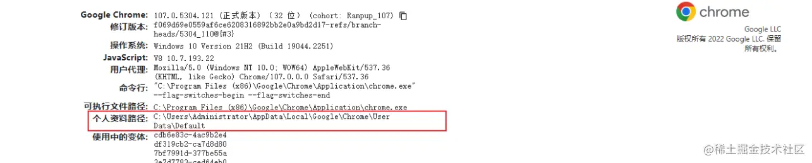
如下图所示：
disk cache 代表走磁盘缓存，memory cache 走内存缓存；此时没有配置任何缓存策略，但还是走了本地缓存，这就是下面要说的浏览器的默认缓存（启发式缓存）。
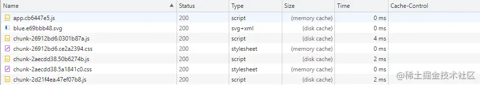
一开始是没有 Cache-Control 这一栏的，需要手动设置一下，在头部右键勾选上 Cache-Control 即可。
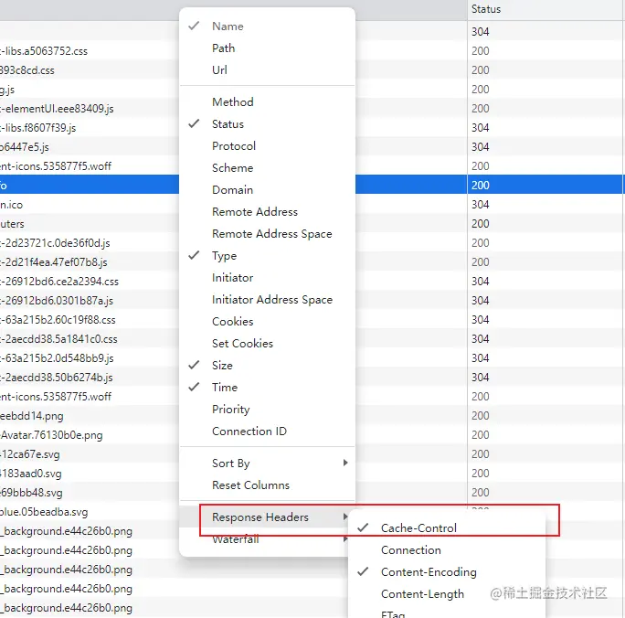
下图的资源则配置了强缓存和协商缓存
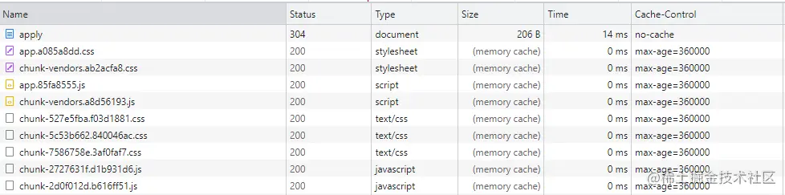
缓存的默认行为（即对于没有 Cache-Control 的响应）不是简单的“不缓存”，而是根据所谓的“启发式缓存”进行隐式缓存。
HTTP 旨在尽可能多地缓存，因此即使没有给出 Cache-Control，如果满足某些条件，响应也会被存储和重用。这称为 启发式缓存。
HTTP/1.1 200 OK
Content-Type: text/html
Content-Length: 1024
Date: Tue, 22 Feb 2022 22:22:22 GMT
Last-Modified: Tue, 22 Feb 2021 22:22:22 GMT
<!doctype html>
…
22:22:22 GMT：北京时间比浏览器时间晚8小时
公式为：( Date - Last-Modified ) * 0.1
MDN：试探性地知道，整整一年没有更新的内容在那之后的一段时间内不会更新。因此，客户端存储此响应（尽管缺少 max-age）并重用它一段时间。复用多长时间取决于实现，但规范建议存储后大约 10%（在本例中为 0.1 年）的时间。
也就是说，如果十天没有更新的资源，会缓存一天的时间，在这段时间内浏览器请求走的都是本地缓存，超出这个时间则向服务器请求资源。
启发式缓存是在
Cache-Control被广泛采用之前出现的一种解决方法，基本上所有响应都应明确指定Cache-Control标头。
这里会比较绕，这个默认缓存的时间到底会缓存多久？是如何进行判断的？
我们查看一个配置文件的缓存，是没有配置缓存策略的，则默认启发式缓存；
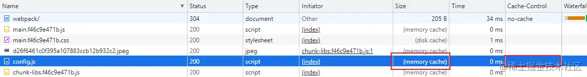
再看下该文件响应头中的 Date 和 Last-Modified 信息，这里的这两个时间是决定下次刷新页面之后，是请求服务器还是走本地缓存的关键因素，注意是 下一次请求！
此时当前这一次请求的响应头 （Date - Last-Modified） * 0.1 是决定该文件缓存时间的长短，也就是 （2023-04-13 - 2023-03-09） 等于 35 天（具体时间时分秒先不计算），再乘以0.1，则当前文件则会缓存大约 3.5 天的时间，用户下次请求这个文件的时候，在 3.5 天之内请求则直接走本地缓存获取，超过 3.5 天去请求当前文件，则会去请求服务器的资源，不再走缓存！
在
Last-Modified（文件最后修改时间）不变的前提下，随着时间的推移，该资源缓存的时间会越来越长~
站在开发者的角度来解析这个问题，当我们自己在做测试启发式缓存的时候，容易出现错乱，就是感受不到启发式缓存的效果，不知道你们有没有遇到过。只要掌握上面的计算方法，一步步拆分，就可以轻松的识别和判断启发式缓存。
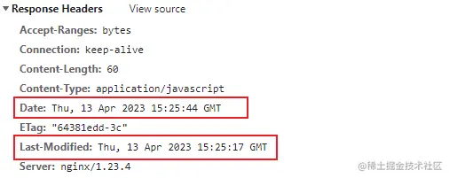
再来看，还是刚才那个文件，在服务器修改了文件的内容，Date 和 Last-Modified 只相差27秒，也就说当前文件只会缓存 2.7秒。因为我们刚刚修改了服务器资源内容，需要 强制刷新 获取的最新文件，是发请求到服务器的，没有走本地缓存，所以这次是看不到效果的，正常是不能用强制刷新的；想要看到效果，在做测试的时候肯定会再次去修改服务器中该文件的内容，然后用 普通刷新 去看当前文件到底是不是走启发式缓存。
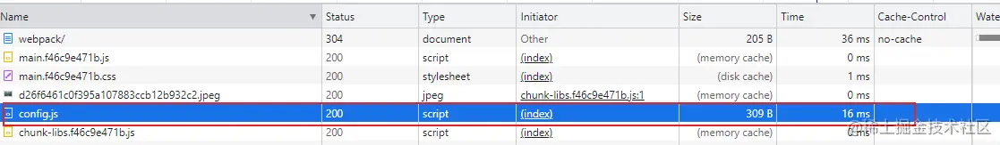
当再次修改服务器资源后刷新页面，如上图所示，发现 config.js 还是请求的服务器资源！没有走缓存！如果走缓存的话，Size栏是 disk cache 或者 memory cache，这是为什么呢？因为之前上次请求资源的 Date 和 Last-Modified 决定下次请求是否走缓存，上次请求资源只缓存了2.7s，我们在服务器改了内容再返回页面去刷新查看结果的这个过程超过了 2.7s 就会重新请求服务器资源！
所以说，我们做测试的时候一定注意尽可能的把
Date和Last-Modified时间拉大一点，才能看出效果。
此时，我们把时间拉的稍微大一点，再去修改服务器中的资源，(49 - 33) * 0.1 大约会缓存一分半时间；
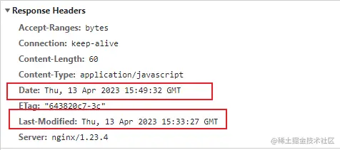
在这一分半时间内，去服务器修改资源之后再去刷新页面，发现此时此刻 config.js 走的就是缓存了，我们服务器虽然修改了 config.js 里面的内容，但是在这个缓存的时间内仍然获取不到最新的内容！所以说系统的配置文件要配置协商缓存。
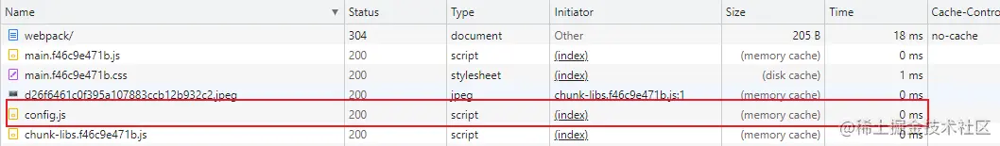
在HTTP/1.1中，Cache-Control是最重要的规则，主要用于控制网页缓存，主要取值为：
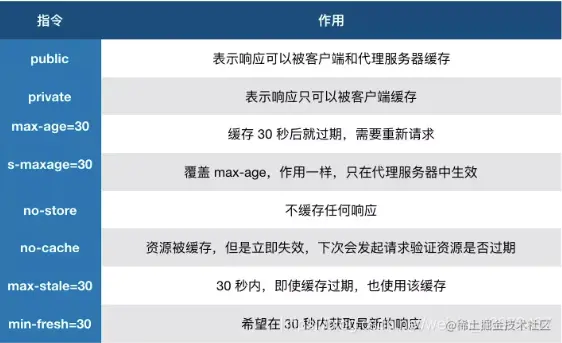
这里主要解读下 max-age=0，no-cache，max-age=10086，no-store 这几项：
Cache-Control : no-cache
no-cache：表示协商缓存，每次请求还是会和服务器去比对资源有没有修改（也就是拿 ETag 或者 Last-Modified 进行比较），如果资源没改变，则直接返回304状态码（Not Modified），说明无需再次传输请求的内容，也就是说可以使用缓存的内容；如果资源改变，则返回200状态码，并且返回新的资源；
Cache-Control : max-age=0,must-revalidate
max-age=0 和 must-revalidate 的组合与 no-cache 具有相同的含义。但是这是为了兼容处理解决HTTP/1.1 之前的许多实现无法处理 no-cache 的情况，但是现在基本都是HTTP/1.1，所以没有理由再用这种方法了，转而直接用 no-cache 则更好！
为确保默认情况下始终传输最新版本的资源，通常的做法是让默认的
Cache-Control值包含no-cache
另外，如果服务实现了 cookie 或其他登录方式，并且内容是为每个用户个性化的，那么也必须提供 private，以防止与其他用户共享：
Cache-Control: no-cache, private
Cache-Control : max-age=10086
max-age=10086：表示强缓存，服务器直接告诉浏览器10086秒不要来烦我，你直接从本地缓存获取资源吧；如果是硬性重新加载，浏览器则表示：我就要向你服务器重新获取资源，你能咋滴吧，不还得乖乖返回给我（狗头）；
Cache-Control : no-store
no-store：表示不缓存，浏览器自带的启发式缓存都不生效了，慎用！
其实这两者差别不大，区别就在于 Expires 是 http1.0 的产物，Cache-Control 是 http1.1 的产物，两者同时存在的话，Cache-Control 优先级高于 Expires；在某些不支持 HTTP1.1 的环境下，Expires 就会发挥用处。所以 Expires 其实是过时的产物，现阶段它的存在只是一种兼容性的写法。
Date 和 Last-Modified决定缓存的时间；你可能认为添加 no-store 只是不进行强缓存和协商缓存了。
但是，连浏览器自带的 启发式缓存策略 都没了，所以不建议随意授予 no-store，因为你失去了 HTTP 和浏览器所拥有的许多优势，包括浏览器的后退/前进缓存。
因此，要获得 Web 平台的全部功能集的优势，最好不要轻易设置 no-store。
永远不会改变的内容应该被赋予一个较长的 max-age；
但是，当用户重新加载时，即使服务器知道内容是不可变的，也会发送重新验证请求。
为了防止这种情况，immutable 指令可用于明确指示不需要重新验证，因为内容永远不会改变。
Cache-Control: max-age=10086, immutable
缓存破坏是一种通过在内容更改时更改 URL 来使响应在很长一段时间内可缓存的技术。该技术可以应用于所有子资源，例如图像。 简单来说就是
index.html里的所有子资源如js、css、图片等，在部署时，通过url的变化，使重新获取新的资源。
当向服务器部署一个前端资源包，虽然把包放到了服务器中，浏览器是如何立马就能知道这是新的资源，从而去获取这些新的资源，而不是去获取浏览器缓存的资源呢？
如何破坏缓存:
这里重点说一下Hash值类型，Vue的生产环境打包采用的也是这种方式；在静态资源文件末尾加上Hash值，保证当前打的包和服务器之前部署的文件区分开来，避免文件名一致，而导致虽然部署成功了，浏览器请求的还是缓存的资源！
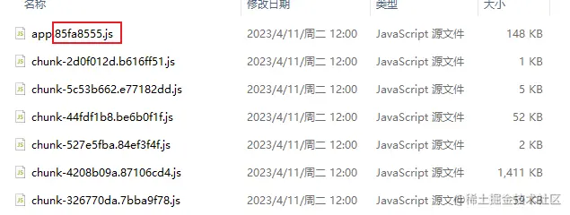
缓存是根据它们的
URL来区分资源，因此如果在更新资源时URL发生变化，缓存将不会再次被重用。
这些打包好的 js、css、img 等静态资源最终会在 index.html 中引用，在访问一个网站的时候，首先会请求 index.html，再去请求 index.html 里面的引用，此时html中引用的 js 等文件，和服务器中 html 引用的 js 等文件已经不是同一个文件了，因为文件名变了（加了Hash值），所以不会走本地缓存。
如果部署了资源，但是刷新页面没有获取到最新的版本内容，我们第一反应是清空浏览器缓存，但是我们不是用户，也不能要求用户每次去清空缓存，户刷新页面大部分是 正常重新加载 里面的一些方式方法，所以遇到这种问题我们的解决方法如下：
使用 Cache-Control: no-cache 协商缓存，使浏览器每次都请求服务器，然后配合 ETag 或者 Last-Modified 来验证资源是否有效，来保证获取的是最新的文件；
拿setting.js举例：此时浏览器获取的内容为
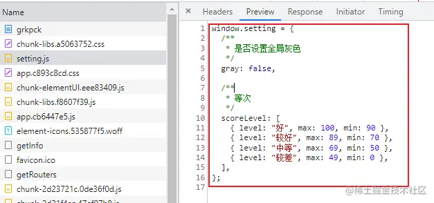
此时正好赶上一个需求，需要把页面所有内容设置为灰色，因为事先在配置文件里面配置了，所以此时只需要在 setting.js 中把 gray 改为 true 即可，如下图所示，这个文件是没有设置缓存策略的，走的默认缓存，获取的是内存中【memory cache】的缓存；
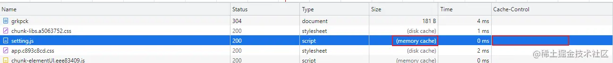
现在修改一下数据库的该文件信息，进行保存
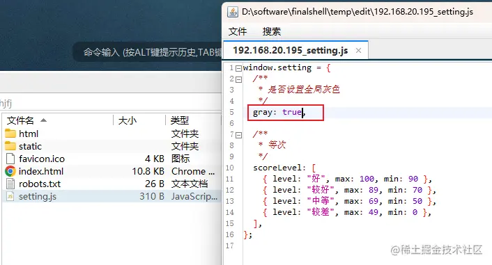
再回到浏览器执行用户常用的 正常重新加载式 刷新页面，发现页面并没有任何变化，查看该文件信息，发现还是获取的之前信息，并没有重新获取服务器修改过的资源信息！因为没有配置相应的缓存策略，用户使用起来就会有问题了，获取不到最新的内容。
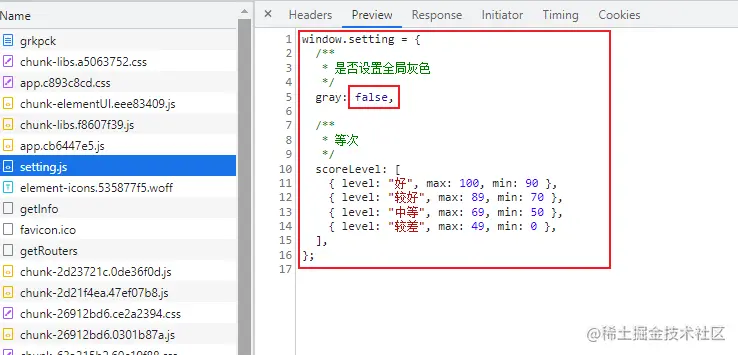
这里也涉及到启发式缓存时间的问题，如果在服务器多次改变该文件内容，并且页面刷新频繁（自己测试的时候会频繁刷新，注意 Response Header 中的 Date 和 Last-Modified 时间的间隔，如果间隔时间很短，短到只有几秒钟，那么你修改配置文件之后，此时再刷新页面就会去请求服务器资源，而不是走缓存了；但是真实用户的 Date 和 Last-Modified 时间间隔不会这么短，默认缓存时间较长），缓存时间就会缩的非常短，让你产生没有配置协商缓存的话，页面也会同步更新，但是这样是有问题的！
所以对于这些文件要配置协商缓存，保证每次获取的都是最新的文件！
使用 Cache-Control 配置一个很大的 max-age=31536000 (一年)；
当重新打的包是带有Hash值的，所以不怕这个强缓存，管它之前缓存的是一年、两年还是十年，当重新部署到服务器的时候，浏览器就得加载最新部署的资源。
使用Nginx设置缓存策略
为什么说 index.html 和 setting.js 要设置协商缓存呢？因为他们的文件名是不可能带hash的，所以要设置协商缓存每次去验证资源是否有效。
在 nginx.conf 中配置以下内容：
server {
# html设置成协商缓存或者不缓存
location ~* \.(html)$ {
# 关闭访问日志
access_log off;
# 进行协商缓存 保证每次调取最新的数据
add_header Cache-Control no-cache;
}
# 特定文件设置强缓存
location ~* \.(css|js|png|jpg|jpeg|gif|gz|svg|mp4|ogg|ogv|webm|htc|xml|woff)$ {
add_header Cache-Control max-age=360000; # 默认4天
#add_header Cache-Control no-store; # 不缓存 但是不推荐 浏览器自带的优化功能用不了了
#add_header Cache-Control no-cache; # 协商缓存 保证每次调取最新的数据
# 系统配置文件setting.js，进行协商缓存 保证每次调取最新的数据
if ($request_filename ~* \.*setting.(js)$) {
add_header Cache-Control no-cache;
}
}
}
设置好后，重启nginx服务，强制刷新再普通刷新页面，会发现资源已经根据 nginx 配置了对应的缓存策略，Size栏也能看到是获取的内存中的缓存。
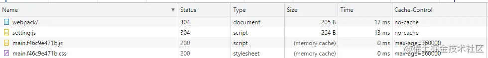